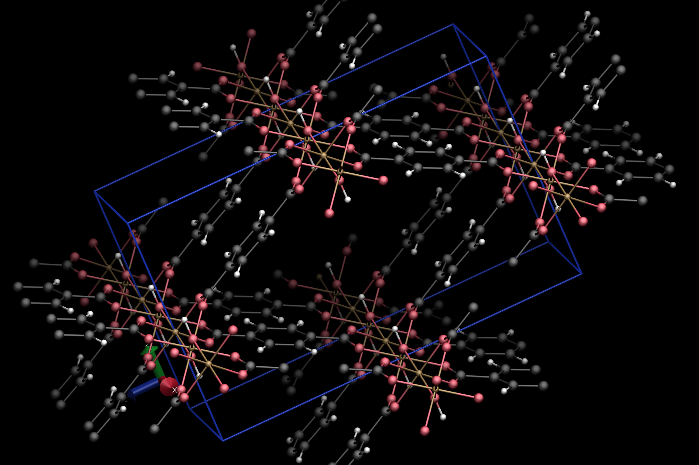
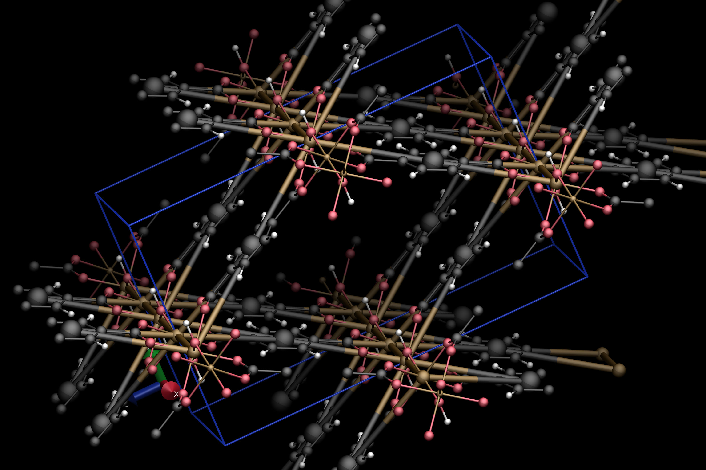
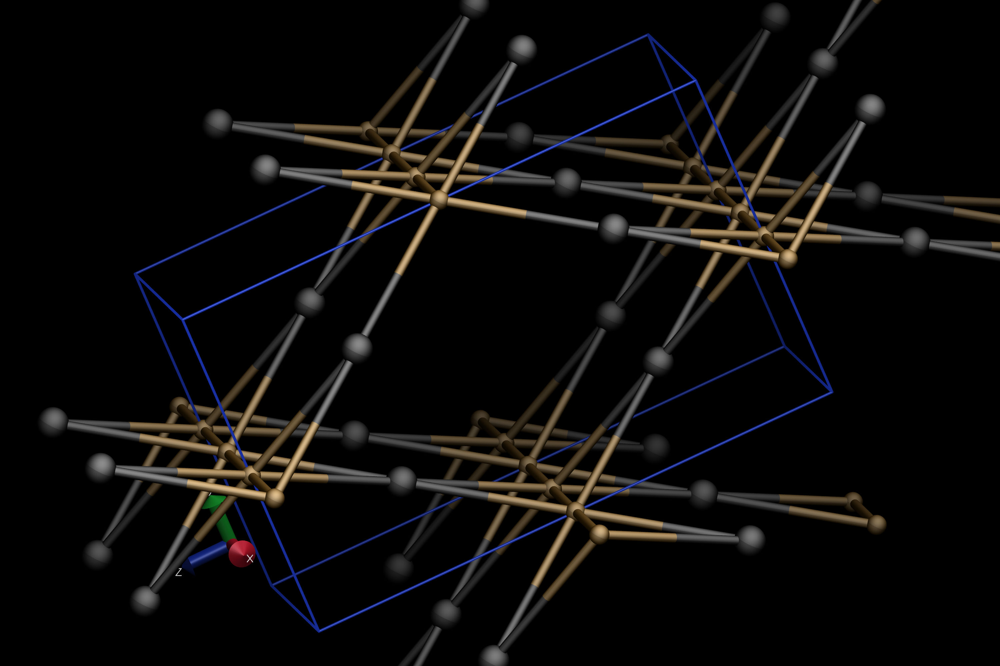

Visualization
When processing individual files through CrystalNets.jl, it is often useful to check whether the detected net actually corresponds to the expected one. To allow this, both the parsed input file as well as the detected subnets are automatically exported by default as VTF files. This file format is recognized by the molecular visualization program VMD and has the property of including explicit bonds, which is necessary in order to represent nets in an unambiguous way.
This mini-tutorial shows a setup to conveniently use VMD to check the adequate superposition of the crystal and its underlying net. It is not a VMD tutorial itself: to find more resources, check the official website.
To toggle off the automatic export of VTF files, use CrystalNets.toggle_export. The automatic export setting is bypassed when giving explicity values to export_* keyword arguments through CrystalNets.Options or directly to the determine_topology function (and other related functions).
VMD setup
After downloading and installing VMD, it can be convenient to customize your setup to taylor your needs. In addition to the official VMD website, an excellent resource for this is Axel Kohlmeyer's personal website.
The following code, heavily inspired from that website, can be appended to your .vmdrc or vmd.rc file to automatically show VTF files using CPK representations, with big spheres and bonds for nets and small ones for the input crystal:
package require pbctools
display projection orthographic # orthographic makes it easier to see the symmetries
proc reset_viz {molid} {
# operate only on existing molecules
if {[lsearch [molinfo list] $molid] >= 0} {
# delete all representations
set numrep [molinfo $molid get numreps]
for {set i 0} {$i < $numrep} {incr i} {
mol delrep $i $molid
}
# add new representations
mol color Element # color each atom according to its element
set name [molinfo $molid get name]
if {[regexp {.*net.*\.vtf} $name] || [regexp {.*clusters.*\.vtf} $name]} {
mol representation CPK 1.2 0.6 # for nets: big spheres
} elseif {[regexp {.*\.vtf} $name]} {
mol representation CPK 0.6 0.2 # for input: small spheres
}
mol selection all
mol addrep $molid
pbc box # add the unit cell
}
}
proc reset_viz_proxy {args} {
foreach {fname molid rw} $args {}
eval "after idle {reset_viz $molid}"
}
trace variable vmd_initialize_structure w reset_viz_proxy
#color Element C black # uncomment to have carbon atoms in black
after idle { reset_viz 0 }An example
Let's consider IM-19 as an example of crystalline framework we are studying. A CIF file for this structure (available from Chaplais et. al. on the CSD) can be accessed at:
julia> path_to_im19 = joinpath(dirname(dirname(pathof(CrystalNets))), "test", "cif", "IM-19.cif");Determining its topology yields the following:
julia> determine_topology(path_to_im19; bonding=Bonding.Guess, structure=StructureType.MOF)
[ Info: Initial pass found O and C with invalid number of bonds.
Export of input is enabled: saving file at /tmp/input_IM-19_0.vtf
Export of subnet_AllNodes is enabled: saving file at /tmp/subnet_AllNodes_IM-19_0.vtf
Export of subnet_SingleNodes is enabled: saving file at /tmp/subnet_SingleNodes_IM-19_0.vtf
AllNodes: rna
SingleNodes: bpqAlthough not necessary, we manually specified bonding=Bonding.Guess to avoid the following warning
[ Warning: Guessing bonds with custom algorithm (from Chemfiles and VMD). This may take a while for big structures and may be inexact.
[ Info: To avoid guessing bonds, use a file format that contains the bonds.The first line of the output is an information about atoms with initial number of bonds. Note that there is no subsequent warning of the form
[ Warning: After attempted fix, found remaining C with invalid number of bonds.which indicates that the problem has been internally resolved. It might be good to manually check whether the guessed bonds make sense, as an extra precaution.
To do so, simply open VMD and load the VTF file corresponding to the input. On Ubuntu, the following shell command can be used:
vmd /tmp/input_IM-19_0.vtfThe result will look like this: 
To visualize the "single nodes" clusters on top of the input, navigate to File -> New Molecule... in the VMD window and load the adequate VTF file (in our case, the one located at /tmp/subnet_SingleNodes_IM-19_0.vtf). The result should look like this: 
To look at the underlying topology only (in our case, the bpq net), you can toggle off the visualization of the input file by double-clicking on the D letter left to the input file name in the main VMD window. The result should look like this: 
Export options
There are several export options bundled with CrystalNets.jl, documented in the Options. Each of them can be given as keyword arguments to all functions accepting an Options argument, like determine_topology.
The value of the keyword argument can be either:
- a
Stringrepresenting the path of the directory in which to put the exported file. If empty, this disables the export. - a
Bool: iftrue, equivalent totempdir(); iffalse, disables the export.
The two exports whose default value is defined by CrystalNets.toggle_export are:
export_inputfor the parsed structure.export_subnetsfor each subnet, defined after clustering and separated into connected components.
Other available export options are disabled by default:
export_trimmedfor the trimmed parsed structure. "Trimming" refers to removing all atoms that have strictly less than three neighbours and bonding those neighbours together, and so iteratively until no atom remains with strictly less than three neighbours.This export can be useful for debugging since the clustering algorithm runs on the trimmed input, or to remove simple solvent molecules.
export_attributionsfor the classes of the atoms, as defined by the clustering algorithm. This is exported as a PDB file, which can also be natively read by VMD: to see the attributions, switch to "Type" for the coloring method instead of "Element".export_clustersfor the clusters. The only difference withexport_subnetsis that the graph induced by the clusters is not trimmed yet.export_netfor the net before separation into connected components. This is equivalent to catenating the result ofexport_subnetsinto a single file.